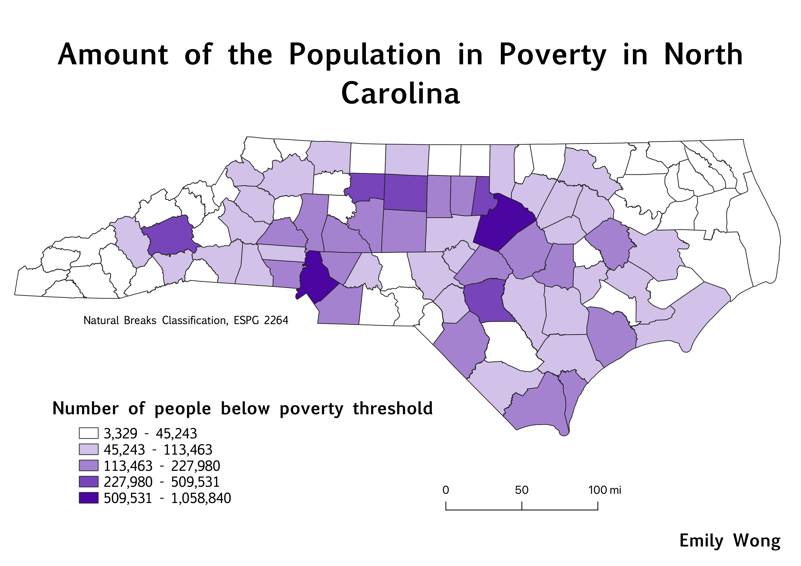

Cloropleth of Poverty in NC by County (2019 ACS Census Data)
This map depicts the number of people in North Carolina counties who fall below the poverty threshold in the United States. The data for this map was obtained from the American Community Survey from the U.S. Census Bureau. The data from this map is from 2019.

Links to data used for this project
Cleaned CSV on GitHub
NC geoJSON on GitHub